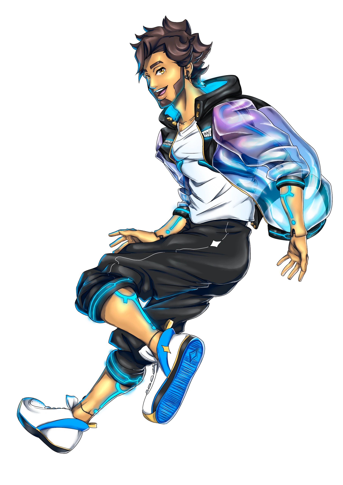
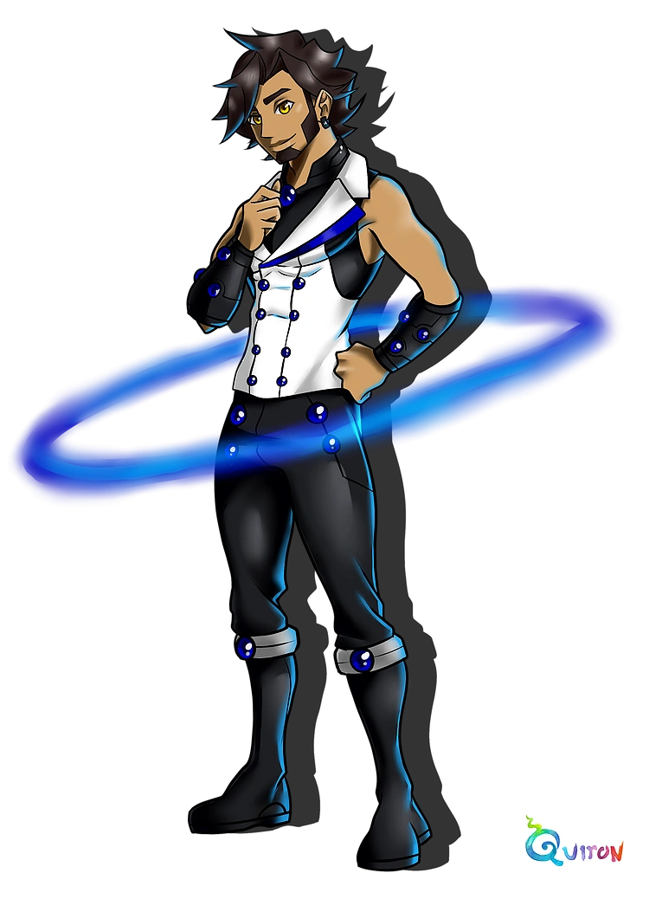
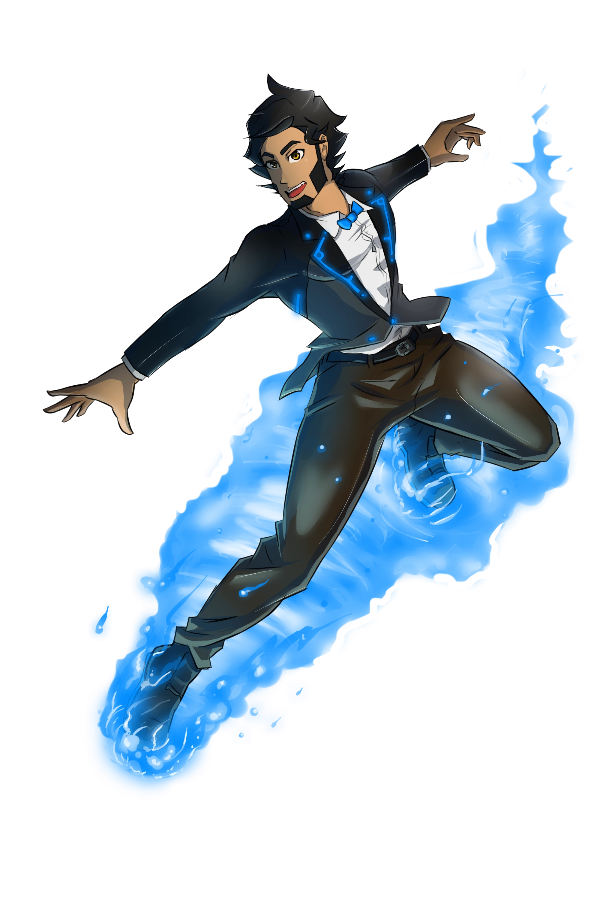
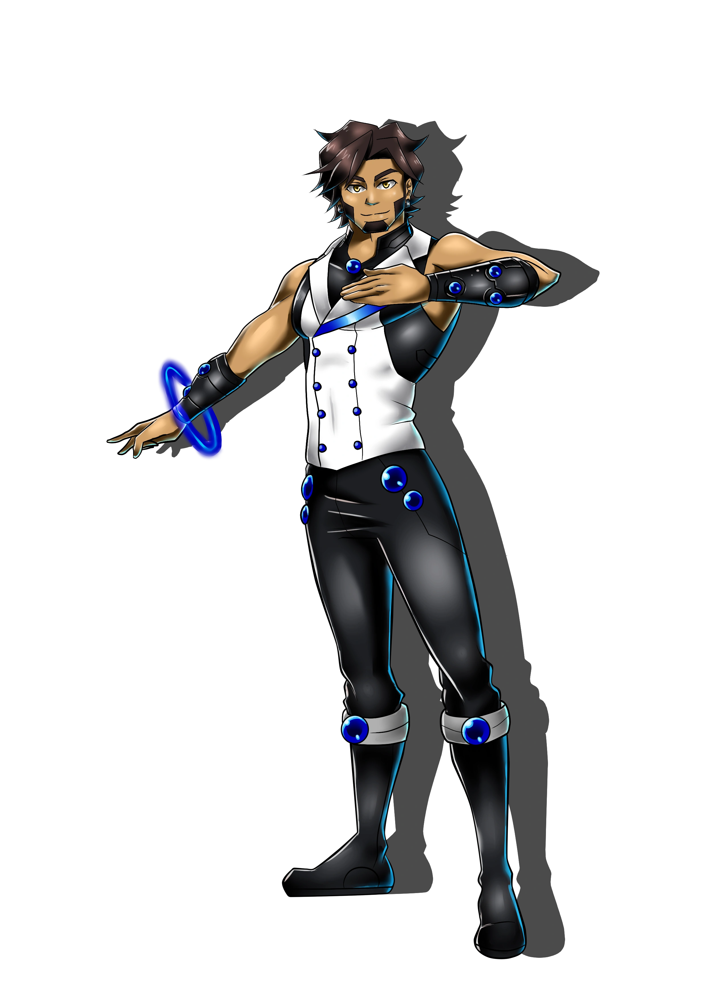
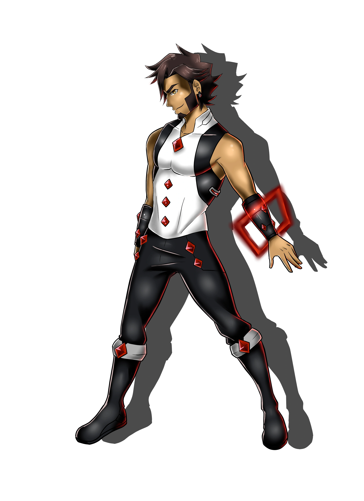
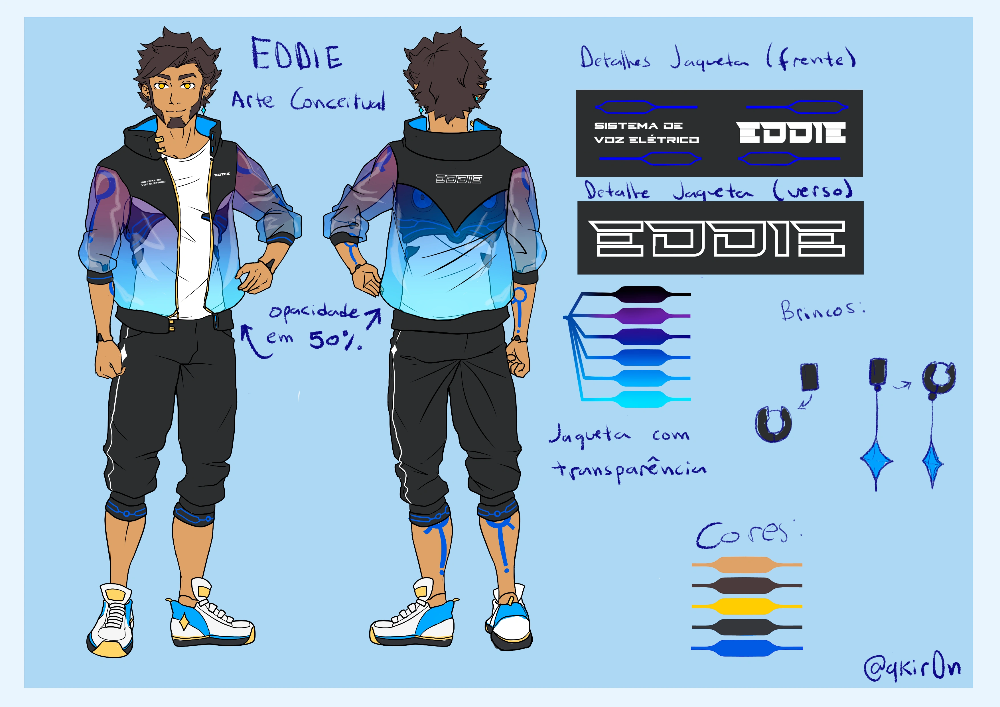

O primeiro banco de voz em PT-BR
Um robô que canta criado por Qkir0n em 2012 e pioneiro na voz sintética em português brasileiro.

EDDIE (anteriormente conhecido como EDpoid) é um UTAU brasileiro criado por Qkir0n em 2012. Ele detém o título histórico de ser o primeiro banco de voz configurado especificamente para o português brasileiro.
Cabelos castanho-escuros, olhos cor de mel e pele morena com traços inspirados na etnia cabocla/tupinambá. Possui tatuagens bioluminescentes azuis em formato de chave e jaqueta transparente em degradê roxo e azul.
Evolução sonora ao longo dos anos
Lançado em comemoração aos 10 anos do EDDIE, o CVC BRAPA é o banco de voz mais completo e moderno do personagem. Gravado inteiramente com a reclist BRAPA, desenvolvida especificamente para o português brasileiro, ele prioriza naturalidade, articulação clara e expressividade vocal. Otimizado para uso no OpenUTAU, oferece ampla cobertura de fonemas e transições suaves entre sílabas, sendo a versão recomendada para novas produções.
A segunda iteração da linha PRIZMA trouxe uma voz mais madura, encorpada e com inflexões naturais inspiradas no sotaque paulistano. Com um alcance vocal significativamente expandido (D#2 até E5), este banco é ideal para composições que exigem versatilidade, indo de graves profundos a agudos expressivos. Inclui suporte bilíngue para japonês e variantes de emotividade, permitindo nuances de interpretação mais ricas.

O primeiro grande salto de qualidade em relação ao ACT3 original. O PRIZMA introduziu a reclist de mesmo nome, trazendo uma articulação mais limpa, melhor concatenação entre fonemas e uma sonoridade mais natural e menos robótica. Representou a transição do EDDIE de um projeto experimental para um banco de voz competitivo dentro da comunidade UTAU brasileira.

O banco que deu início a tudo. Lançado em dezembro de 2012, o ACT3 fez do EDDIE o primeiro UTAU configurado para cantar em português brasileiro. Com uma voz jovial e de timbre grave, ele carrega o charme de uma era experimental da voz sintética no Brasil. Apesar das limitações técnicas da época, permanece como um marco histórico da comunidade vocal synth brasileira.
Módulos vocais que expandem a paleta expressiva do EDDIE. O Tanzanite (azul) oferece uma voz suave, sussurrada e intimista, perfeita para baladas e músicas delicadas. Já o Corundum (vermelho) entrega uma voz potente, rasgada e cheia de energia, ideal para rock e composições mais intensas. Originalmente lançados em formato CVVC/VCCV, foram relançados em 2025 como encode BRAPA para maior compatibilidade com o ecossistema atual.


Artes oficiais por Qkir0n

Exemplos de uso